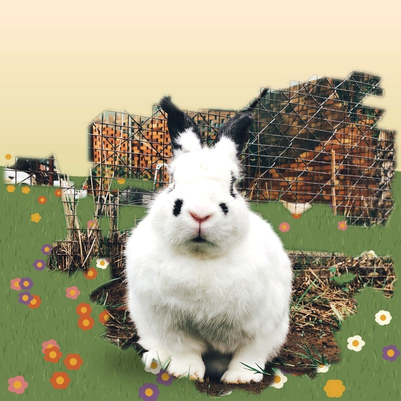

Know your rabbit. Win the ribbon.
A knowledge quiz built straight from the official rabbit handleiding — for exhibitors preparing for the show bench, in three age divisions.

Pick your division
Junior Junior
Easy questions with simple words, made for the youngest exhibitors just starting to learn about their rabbits.
Junior
A step up in detail — housing, feeding, breeding and health, worded for confident young readers.
Senior
The full technical depth of the handleiding — for exhibitors who should know their craft cold.
How each quiz works
20 questions, every time
Each attempt draws 20 fresh questions from the full rotating question bank covering all eight chapters, so no two quizzes feel the same.
Matched to your division
Junior Junior, Junior, and Senior each get their own wording and depth — simple language for the youngest exhibitors, full technical detail for Seniors.
Learn as you go
The correct answer and a short explanation appear right after you answer, so every question is a small lesson from the handleiding.
Well done!
Chapter breakdown
Pick your division
Junior Junior
Easy questions with simple words, made for the youngest exhibitors just starting to learn about their rabbits.
Junior
A step up in detail — housing, feeding, breeding and health, worded for confident young readers.
Senior
The full technical depth of the handleiding — for exhibitors who should know their craft cold.
About Rabbit Wise
This quiz was built from an official Youth Show rabbit handleiding (guide) so that young exhibitors can practise their knowledge in a fun, low-pressure way before facing a judge's questions on the show bench.
There are three divisions, matched to the Youth Show age groups: Junior Junior (6–8), Junior (9–14) and Senior (15–18). Each division's questions are worded for that age group specifically — simpler for younger exhibitors, and going into full technical depth for Seniors.
Where the content comes from
Questions are drawn from all eight chapters of the handleiding: what a rabbit is, housing and sanitation, food and nutrition, breeding, health and disease, breeds, show preparation, and the show itself — including the practical judging checklist real judges use.
A note on the pictures
Breed-identification questions use simple original illustrations rather than photographs, so nothing here runs into copyright trouble. If you'd like real photos, see the code comments near BREED_IMAGES for a two-line swap using your own licensed images.
Privacy Policy
Last updated: 2026. This page explains, plainly, what happens with information on this site.
What we collect
This site does not require an account, a name, or an email address to play. Your quiz progress (score history and which questions you've recently seen) is stored only in your own browser's local storage, never on a server, and never shared with us or anyone else.
Advertising
This site may show ads served by Google AdSense to keep it free for schools and families. Google may use cookies or device identifiers to show relevant ads. You can control ad personalisation through Google's own settings at adssettings.google.com.
Children's use
This site is designed for use by children under adult or teacher supervision as part of Youth Show preparation. No personal information is requested from or required of any user, child or adult, to use the quiz.
Cookies
Aside from advertising cookies described above, this site does not use tracking cookies of its own.
Contact
Questions about this policy can be directed to the site owner using the contact details published on the show or club's official page.